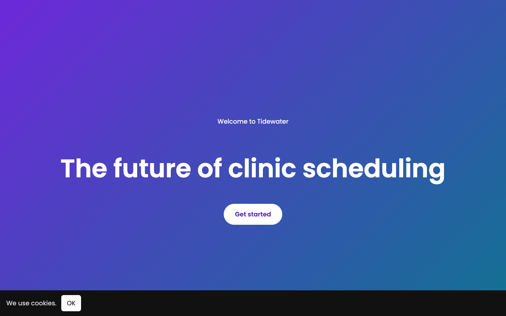
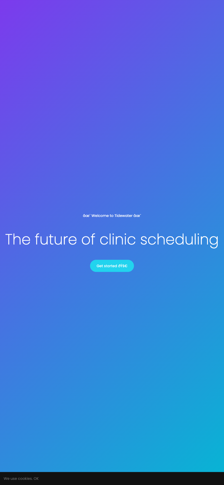
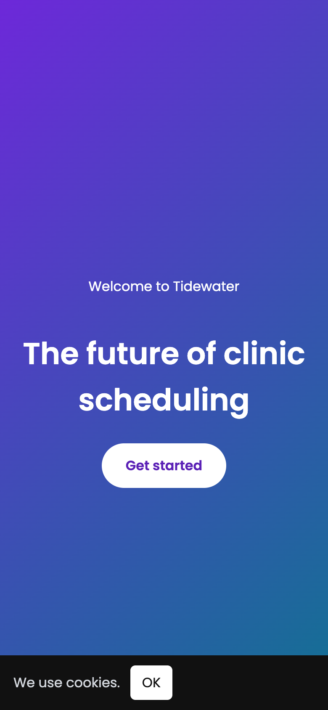

Output




Result
Delivered a fixed landing page (site/new/index.html, full contents below): faster first paint, accessible and with search metadata, and the same look.
Scope note: the guide I followed is a React/Next.js performance guide. It speaks to scripts, third-party loading, resource hints and idle work, but has nothing on accessibility or SEO and no rule for non-blocking CSS. I applied its rules to performance first, measured, and handled accessibility and SEO with general practice (flagged below), then used a general technique for the last performance blocker once the measurement showed it.
Measured with Lighthouse 13.5 (mobile, simulated slow 4G + 4x CPU, localhost, cold cache, median of 3):
- Original: performance 80, accessibility 27, SEO 80, best practices 88; FCP 3.23 s, LCP 3.94 s.
- After applying the guide's performance rules only (v1): FCP 3.45 s (range 3.25 to 6.5 s), performance 84 median with one 59 outlier. The rules removed jQuery and moment from the critical path, but the first paint was still held by the Google Fonts stylesheet, so first paint did not improve.
- Final (non-blocking font CSS added): performance 100, accessibility 100, SEO 100, best practices 100; FCP = LCP 0.62 s; requests 10 -> 4, transfer about 90 KiB -> 20 KiB; CLS 0.01 (a small font-swap shift, below the 0.1 threshold).
What was applied from the guide: defer/remove blocking scripts (moment was unused and jQuery only inserted one block, so both were removed rather than just deferred; the 3e7-iteration busy loop that delayed first paint was removed - genuinely deferrable work belongs in requestIdleCallback chunks); resource hints (preconnect to fonts.googleapis.com and fonts.gstatic.com); load only what is used (one font family, two weights); render content that is known at build time in the HTML instead of injecting it late.
What was not from the guide: font-display=swap and the media-swap trick for the stylesheet; every accessibility and SEO change (lang, title, meta description, viewport, doctype, charset, a real link and a real button, a main landmark, heading order, readable contrast with computed ratios, a visible focus ring).
Not done / uncertain: no canonical, Open Graph or structured data (needs the real domain and facts); Google Fonts is still a third-party request (self-hosting would remove it); the tagline wording is unchanged but its weight changed from 200 to 600 for legibility; contrast on the gradient was computed at both endpoints only; a score of 100 is not proof of WCAG conformance and no screen reader was run; lab data only, no field data exists for a local page.
Terminal
# The rules from the guide that apply to a plain HTML page; each rules/<name>.md was read. The guide has nothing for accessibility or SEO.
gh api repos/vercel-labs/agent-skills/contents/skills/react-best-practices/SKILL.md --jq .content | base64 -d | grep -E '^- `(rendering-script-defer-async|rendering-resource-hints|bundle-defer-third-party|bundle-conditional|js-request-idle-callback|rendering-content-visibility)`'
- `bundle-defer-third-party` - Load analytics/logging after hydration
- `bundle-conditional` - Load modules only when feature is activated
- `rendering-content-visibility` - Use content-visibility for long lists
- `rendering-resource-hints` - Use React DOM resource hints for preloading
- `rendering-script-defer-async` - Use defer or async on script tags
- `js-request-idle-callback` - Defer non-critical work to browser idle time
# Baseline. python3 -m http.server serves site/orig and site/new on port 7104.
npx lighthouse http://localhost:7104/orig/ --form-factor=mobile --output=json --chrome-flags='--headless=new --no-sandbox' # x3, then node summarize.mjs orig 3
{
"variant": "orig",
"runs": 3,
"lighthouse": "13.5.0",
"form": "mobile, simulated slow-4G + 4x CPU",
"scores": {
"performance": "80 (runs 78/80/81)",
"accessibility": "27 (runs 27/27/27)",
"seo": "80 (runs 80/80/80)",
"best-practices": "88 (runs 88/88/88)"
},
"metrics": {
"FCP_ms": "3229.43 (range 2964.91-3373.62)",
"LCP_ms": "3936.57 (range 3373.62-4163.88)",
"TBT_ms": "0 (range 0-0)",
"CLS": "0 (range 0-0)",
"SpeedIndex_ms": "4880.65 (range 3193.29-6307.89)"
},
"failingAudits": [
"best-practices: errors-in-console",
"accessibility: color-contrast",
"accessibility: document-title",
"accessibility: heading-order",
"accessibility: html-has-lang",
"accessibility: landmark-one-main",
"best-practices: doctype",
"best-practices: charset",
"seo: meta-description"
]
}
# The failing audits: jQuery (2.2 s), moment (unused) and the 18-weight font CSS block first paint; 11 low-contrast nodes; missing metadata.
node details.mjs orig
render-blocking: Est savings of 2,610 ms; cdn.jsdelivr.net/npm/moment@2.30.1/mom=458ms, cdn.jsdelivr.net/npm/jquery@3.7.1/dist=2169ms, fonts.googleapis.com/css2?family=Inter=1690ms
font-display: Est savings of 710 ms
LCP breakdown: Time to first byte 3ms, Element render delay 2962ms
unused-javascript: Est savings of 23 KiB
third-parties: JSDelivr CDN 51 KiB, Google Fonts 37 KiB
bootup-time: 0.1 s
color-contrast: score 0 FAIL (11 nodes: 1.8, 2.84, 3.28)
document-title: score 0 FAIL
html-has-lang: score 0 FAIL
heading-order: score 0 FAIL
landmark-one-main: score 0 FAIL
meta-description: score 0 FAIL
doctype: score 0 FAIL
charset: score 0 FAIL
errors-in-console: score 0 FAIL
# Accessibility, SEO and best practices are fixed, but first paint barely moved (3.45 s).
npx lighthouse http://localhost:7104/v1/ ... # v1 = the guide's rules + the general accessibility/SEO fixes; x3, then node summarize.mjs v1 3
{
"variant": "v1",
"runs": 3,
"lighthouse": "13.5.0",
"form": "mobile, simulated slow-4G + 4x CPU",
"scores": {
"performance": "84 (runs 84/84/59)",
"accessibility": "100 (runs 100/100/100)",
"seo": "100 (runs 100/100/100)",
"best-practices": "100 (runs 100/100/100)"
},
"metrics": {
"FCP_ms": "3445.29 (range 3252.52-6500.89)",
"LCP_ms": "3445.29 (range 3252.52-6500.89)",
"TBT_ms": "0 (range 0-0)",
"CLS": "0 (range 0-0.01)",
"SpeedIndex_ms": "4798.28 (range 3491.19-9014.26)"
},
"failingAudits": []
}
# Why: the Google Fonts stylesheet is the one remaining render-blocking resource (~1.5 s) and the LCP element waits 2.5 s to render. The guide has no rule for it.
node details.mjs v1
render-blocking: Est savings of 2,620 ms; fonts.googleapis.com/css2?family=Poppi=1488ms
font-display: ok
LCP breakdown: Time to first byte 2ms, Element render delay 2488ms
unused-javascript: -
third-parties: Google Fonts 17 KiB
bootup-time: 0.0 s
color-contrast: score 1 (0 nodes: )
document-title: score 1
html-has-lang: score 1
heading-order: score 1
landmark-one-main: score 1
meta-description: score 1
doctype: score 1
charset: score 1
errors-in-console: score 1
# General technique, not from the guide. Same tool, same conditions.
# v2: load the font stylesheet with media='print' onload="this.media='all'" (+ <noscript> fallback), then:
npx lighthouse http://localhost:7104/new/ ... # x3, then node summarize.mjs new 3
{
"variant": "new",
"runs": 3,
"lighthouse": "13.5.0",
"form": "mobile, simulated slow-4G + 4x CPU",
"scores": {
"performance": "100 (runs 100/100/100)",
"accessibility": "100 (runs 100/100/100)",
"seo": "100 (runs 100/100/100)",
"best-practices": "100 (runs 100/100/100)"
},
"metrics": {
"FCP_ms": "617.68 (range 615.73-622.55)",
"LCP_ms": "617.68 (range 615.73-622.55)",
"TBT_ms": "0 (range 0-0)",
"CLS": "0.01 (range 0.01-0.01)",
"SpeedIndex_ms": "617.68 (range 615.73-622.55)"
},
"failingAudits": []
}
# Render-blocking is gone; LCP element render delay fell from about 3.0 s to 38 ms.
node details.mjs new; node -e '...network-requests count and transfer for orig / v1 / new'
render-blocking: none;
LCP breakdown: Time to first byte 1ms, Element render delay 38ms
orig requests 10 transfer 90 KiB
v1 requests 4 transfer 20 KiB
new requests 4 transfer 20 KiB
# Gradient checked at both endpoints.
python3 - <<'EOF' # WCAG relative-luminance contrast of the new colour pairs
NEW hero white on #6d28d9: 7.1:1 (old: white on #7c3aed 5.7:1, white on #06b6d4 2.43:1)
NEW hero white on #0e7490: 5.36:1
NEW button #5b21b6 on #fff: 8.98:1 (old: #fff on #22d3ee 1.81:1)
NEW body #4b5563 on #fff: 7.56:1 (old: #999 on #fff 2.85:1)
NEW banner #d1d5db on #111: 12.81:1 (old: #666 on #111 3.29:1)
# Manual checks Lighthouse cannot do: the original page cannot be tabbed (focus stays on body); the new link and button are reachable in order, Enter dismisses the banner, no horizontal overflow at 390 px.
node manual.mjs # puppeteer: orig, then new (Tab x4, Enter on the cookie OK, 390 px overflow)
{
"variant": "orig",
"doc": {
"lang": "(none)",
"title": "(none)",
"viewportMeta": false,
"description": false,
"compat": "BackCompat",
"h1": [
"The future of clinic scheduling"
],
"landmarks": []
},
"tabStops": [
"(body)",
"(body)",
"(body)",
"(body)"
],
"bannerRemovedByKeyboard": "n/a: the OK control is a span, it cannot be focused",
"mobile": {
"innerWidth": 980,
"scrollWidth": 980,
"horizontalOverflow": false
}
}
{
"variant": "new",
"doc": {
"lang": "en",
"title": "Tidewater \u2013 Scheduling software for physiotherapy clinics",
"viewportMeta": true,
"description": true,
"compat": "CSS1Compat",
"h1": [
"The future of clinic scheduling"
],
"landmarks": [
"main"
]
},
"tabStops": [
"a:Get started",
"button:OK",
"(body)",
"a:Get started"
],
"bannerRemovedByKeyboard": true,
"mobile": {
"innerWidth": 390,
"scrollWidth": 390,
"horizontalOverflow": false
}
}
Files
site/new/index.html
<!doctype html> <html lang=class="s">"en"> <head> <meta charset=class="s">"utf-8"> <meta name=class="s">"viewport" content=class="s">"width=device-width, initial-scale=1"> <title>Tidewater – Scheduling software for physiotherapy clinics</title> <meta name=class="s">"description" content=class="s">"Tidewater is appointment scheduling for small physiotherapy clinics: a smart calendar, reminders that reduce no-shows, and insights on your schedule."> <link rel=class="s">"icon" href=class="s">"data:,"> <!-- Resource hints: open the font connections early instead of discovering them after the CSS arrives --> <link rel=class="s">"preconnect" href=class="s">"https://fonts.googleapis.com"> <link rel=class="s">"preconnect" href=class="s">"https://fonts.gstatic.com" crossorigin> <!-- Only the family and weights that are used; display=swap so text is visible while the font loads --> <!-- Load the font CSS without blocking first paint (media swap), with a no-JS fallback --> <link href=class="s">"https://fonts.googleapis.com/css2?family=Poppins:wght@400;600&display=swap" rel=class="s">"stylesheet" media=class="s">"print" onload=class="s">"this.media='all'"> <noscript><link href=class="s">"https://fonts.googleapis.com/css2?family=Poppins:wght@400;600&display=swap" rel=class="s">"stylesheet"></noscript> <style> body{font-family:Poppins,sans-serif;margin:0;color:#4b5563;background:#fff;padding-bottom:64px} .hero{min-height:100vh;background:linear-gradient(135deg,#6d28d9,#0e7490);color:#fff;display:flex;flex-direction:column;align-items:center;justify-content:center;text-align:center;padding:24px} .hero h1{font-size:clamp(36px,8vw,64px);font-weight:600} .btn{background:#fff;color:#5b21b6;padding:14px 28px;border-radius:30px;text-decoration:none;font-weight:600} .btn:focus-visible,.banner button:focus-visible{outline:3px solid #fbbf24;outline-offset:3px} .features{display:flex;flex-wrap:wrap;gap:20px;padding:60px 24px} .card{flex:1 1 240px;padding:24px;box-shadow:0 10px 40px rgba(0,0,0,.2)} .testimonials{height:400px;padding:60px 24px} .banner{position:fixed;bottom:0;left:0;right:0;padding:12px 16px;background:#111;color:#d1d5db} .banner button{font:inherit;background:#fff;color:#111;border:0;border-radius:6px;padding:8px 14px;margin-left:8px;cursor:pointer} </style> </head> <body> <main> <div class=class="s">"hero"> <p>Welcome to Tidewater</p> <h1>The future of clinic scheduling</h1> <a class=class="s">"btn" href=class="s">"/signup">Get started</a> </div> <div class=class="s">"features"> <div class=class="s">"card"><h2>Smart calendar</h2><p>Our AI-powered calendar revolutionizes how you schedule.</p></div> <div class=class="s">"card"><h2>Reminders</h2><p>Seamlessly reduce no-shows with cutting-edge reminders.</p></div> <div class=class="s">"card"><h2>Insights</h2><p>Unlock the power of your data with robust analytics.</p></div> </div> <!-- Rendered in the HTML itself (was injected by jQuery after 1.5 s, which shifted layout and needed a library) --> <section class=class="s">"testimonials"><h2>Loved by clinics</h2><p>class="s">"Tidewater changed everything." – A clinic</p></section> </main> <div class=class="s">"banner" id=class="s">"cookies">We use cookies. <button type=class="s">"button" id=class="s">"cookies-ok">OK</button></div> <script>document.getElementById(class="s">"cookies-ok").addEventListener(class="s">"click",function(){document.getElementById(class="s">"cookies").remove()})</script> </body> </html>